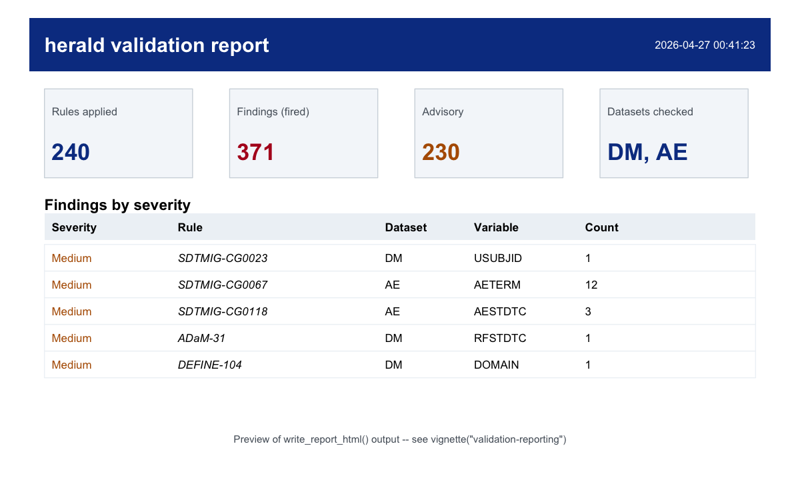

Pure-R conformance validation for CDISC clinical data submissions. Reads SDTM and ADaM datasets from XPT, Dataset-JSON, and Parquet files, checks them against published CDISC Library rules, controlled terminology, and Define-XML 2.1 specs. No Java runtime required.
herald is a pure-R package for teams that need reproducible submission checks without a Java desktop validator. It reads clinical datasets, stamps metadata from a submission specification, runs SDTM, ADaM, and Define-XML rules, and writes review-ready reports.
Status: pre-alpha. APIs can still change while the rule engine and Define-XML round-trip are being completed.
Why herald?
Clinical submission validation usually crosses several tools: SAS transport writers, spreadsheet specs, Define-XML tooling, controlled terminology lookups, Java validators, and hand-built reports. herald puts the core workflow in one auditable R pipeline.
| Capability | herald |
|---|---|
| Pure-R validation path | No JVM or desktop validator required for package workflows |
| Dataset I/O | XPT, Dataset-JSON, and Parquet readers/writers |
| Single metadata object |
herald_spec drives labels, lengths, types, and Define-XML |
| Rule transparency |
rule_catalog() exposes every compiled rule and predicate state |
| Dictionary protocol | CDISC CT, SRS, MedDRA, WHODrug, LOINC, SNOMED, and sponsor dictionaries use one interface |
| Reports | HTML for review, XLSX for triage, JSON for automation |
| Define-XML | Read/write round-trip for Define-XML 2.1 and reviewer HTML |
Compare to Pinnacle 21
| Dimension | herald | Pinnacle 21 (Community / Enterprise) |
|---|---|---|
| Engine | Pure R (no JVM) | Java (JVM required) |
| Cost | Open source (MIT) | Community free / Enterprise commercial |
| Extensibility |
.register_op() + YAML rule corpus |
Closed rule engine |
| Define-XML round-trip | Read + write + reviewer HTML | Read + reviewer HTML |
| Dictionary protocol | Pluggable provider interface | Built-in lookups |
| Output formats | HTML, XLSX, JSON | HTML, XLSX |
CI / targets / renv
|
First-class (pure R) | External tool invocation |
Pipeline verbs
| Workflow step | Primary function |
|---|---|
| Read datasets |
read_xpt(), read_json(), read_parquet()
|
| Build or load specs |
as_herald_spec(), herald_spec(), read_define_xml()
|
| Stamp labels, lengths, and types | apply_spec() |
| Validate submissions | validate() |
| Inspect rule coverage |
rule_catalog(), supported_standards()
|
| Use controlled terminology |
load_ct(), ct_provider()
|
| Write reports |
report(), write_report_html(), write_report_xlsx(), write_report_json()
|
| Author Define-XML |
write_define_xml(), write_define_html()
|
| Convert formats | convert_dataset() |
Installation
herald is not on CRAN yet.
# from GitHub (recommended while pre-CRAN)
pak::pak("vthanik/herald")
# or from a local clone
pak::local_install()
# after the first public release
install.packages("herald")Five-minute workflow
This example uses the lazy-loaded pilot datasets shipped with the package (dm, adsl, adae, advs).
library(herald)
r <- validate(files = list(DM = dm, AE = adae))
#> ✔ Loaded 1762 rules; validating 2 datasets.
summary(r)
#> $state
#> [1] "Incomplete"
#>
#> $rules_applied
#> [1] 240
#>
#> $rules_total
#> [1] 1762
#>
#> $datasets_checked
#> [1] "DM" "AE"
#>
#> $n_findings_fired
#> [1] 371
#>
#> $n_findings_advisory
#> [1] 230
#>
#> $severity_counts
#>
#> Medium
#> 371
#>
#> $duration
#> Time difference of 1.358754 secs
#>
#> $timestamp
#> [1] "2026-04-27 00:47:28 BST"
write_report_html(r, tempfile(fileext = ".html"))What you get
The HTML report opens with a header band, summary tiles, and a sortable findings table grouped by severity, rule, and dataset.

Write the same result to other formats:
report(r, "validation-report.html")
report(r, "validation-report.xlsx")
report(r, "validation-report.json")Convert between transport formats:
write_xpt(dm, "dm.xpt")
convert_dataset("dm.xpt", "dm.json")Key features
Transparent rule corpus
catalog <- rule_catalog()
catalog[catalog$has_predicate, c("rule_id", "standard", "severity", "message")]
supported_standards()Controlled terminology in the same pipeline
ct <- ct_provider("sdtm")
ct$contains(c("Y", "N", "UNKNOWN"), field = "NY")
validate(
files = dm,
dictionaries = list("ct-sdtm" = ct),
quiet = TRUE
)Define-XML round-trip
write_define_xml(sdtm_spec, "define.xml", validate = FALSE)
define <- read_define_xml("define.xml")
write_define_html(sdtm_spec, "define.html", define_xml = "define.xml")Documentation
Start with these vignettes:
-
vignette("herald"): end-to-end package workflow -
vignette("validation-reporting"): validation, filtering, and reports -
vignette("data-io"): XPT, Dataset-JSON, Parquet, and conversion -
vignette("define-xml"): Define-XML 2.1 read/write round-trip -
vignette("dictionaries"): controlled terminology and dictionary providers -
vignette("best-practices"): production validation project patterns -
vignette("architecture"): package layers and extension points -
vignette("rule-coverage"): rule fixture coverage status
Development checks
Run these before committing package changes:
Rscript -e 'devtools::document()'
Rscript -e 'devtools::test()'
Rscript -e 'devtools::check(args = "--no-manual")'Generated files such as man/*.Rd, NAMESPACE, and compiled rule artifacts should be regenerated from source, not hand-edited.